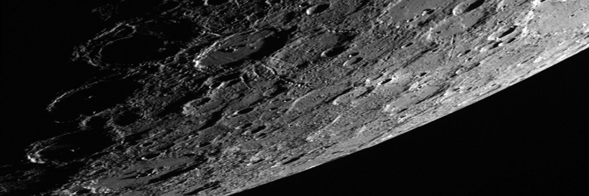

Mercury

- 
Mercury
Mercury is the smallest planet in the Solar System and the one closest to the Sun,with an orbital period of about 88 Earth days, which is much faster than any other planet in the Solar System. Seen from Earth, it appears to move around its orbit in about 116 days. It has no known natural satellites. It is named after the Roman deity Mercury, the messenger to the gods.
Partly because it has almost no atmosphere to retain heat, Mercury's surface temperature varies diurnally more than any other planet in the Solar System, ranging from 100 K (−173 °C; −280 °F) at night to 700 K (427 °C; 800 °F) during the day in some equatorial regions. The poles are constantly below 180 K (−93 °C; −136 °F). Mercury's axis has the smallest tilt of any of the Solar System's planets (about 1⁄30 of a degree), and its orbital eccentricity is the largest of all known planets in the Solar System. At aphelion, Mercury is about 1.5 times as far from the Sun as it is at perihelion. Mercury's surface is heavily cratered and similar in appearance to the Moon, indicating that it has been geologically inactive for billions of years.
Mercury is tidally or gravitationally locked with the Sun in a 3:2 resonance and rotates in a way that is unique in the Solar System. As seen relative to the fixed stars, it rotates on its axis exactly three times for every two revolutions it makes around the Sun. As seen from the Sun, in a frame of reference that rotates with the orbital motion, it appears to rotate only once every two Mercurian years. An observer on Mercury would therefore see only one day every two years.
Because Mercury orbits the Sun within Earth's orbit (as does Venus), it can appear in Earth's sky in the morning or the evening, but not in the middle of the night. Also, like Venus and the Moon, it displays a complete range of phases as it moves around its orbit relative to Earth. Although Mercury can appear as a bright object when viewed from Earth, its proximity to the Sun makes it more difficult to see than Venus. Two spacecraft have visited Mercury: Mariner 10 flew by in the 1970s; and MESSENGER, launched in 2004, orbited Mercury over 4,000 times in four years, before exhausting its fuel and crashing into the planet's surface on April 30, 2015.